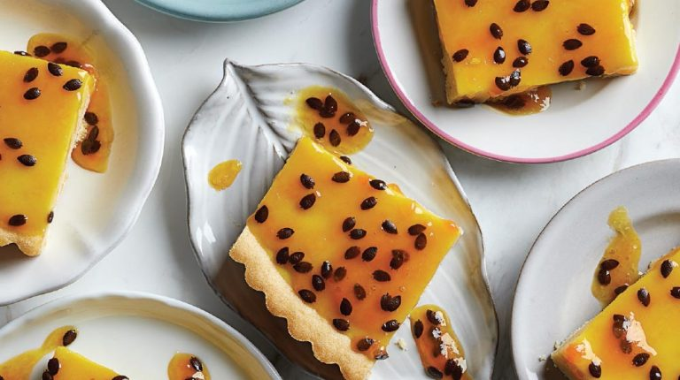

Postre de maracuya
El maracuyá, también conocido como fruta de la pasión, es un fruto que aporta a nuestro
organismo un elevado contenido de vitamina A y C,hierro, fibra y calcio, entre otros nutrientes esenciales.
En esta receta, te enseñaremos a preparar un postre muy sencillo con este producto.

Ingredientes
- 1 lata de Leche condensada.
- 1 lata de Crema de leche.
- 1 lata de Zumo de maracuyá.
- paquete de Galletas Ducales.
Como hacer punta de anca a la parrilla :
- Cogemos un recipiente de borde alto y la batidora, o la licuadora, y batimos la leche condensada con la crema de leche y el jugo de maracuyá hasta formar una crema homogénea.
Si quieres hacer este postre más ligero, te aconsejo que prepares la leche condensada sin azúcar.
- Cogemos una refractaria o el molde que tengamos y colocamos una capa base de galletas Ducales. Sobre ella, vertemos un poco de la crema anterior,
de manera que todas las galletas queden cubiertas. Luego, añadimos otra capa de galletas y otra de crema, y así hasta finalizar la crema.
La última capa debe ser precisamente de crema de maracuyá. Puedes decorar con trozos de maracuyá si quieres.
- Reservamos el postre de maracuyá en el frigorífico durante 30 minutos como mínimo para que cuaje. ¡Y listo! Como ves,
se trata de una elaboración muy sencilla, rápida y diferente de pastel frío. Puedes decorarlo con chocolate fundido o crema chantillí.
Si lo prefieres, puedes hacerlo en moldes individuales en lugar de uno grande.
pagina principal